Introduction
Working on a lot of non-standardized media server features like WebRTC simulcast or HLS to WebRTC conversion, we got priceless knowledge and experience. In a lot of cases, to make something work we had to dive into an extremely complex code. Many times we reached the ends of the Internet...
This book is an effort to collect everything we learned, read, discovered or invented both for us - developers of Jellyfish media server and for you - curious travelers willing to create your own media server.
Happy reading!
WebRTC
WebRTC Congestion Control
Congestion Control
The network has its capacity. When a sender sends more data than network devices are able to process, packets will be delayed and finally dropped. Such a situation is called network congestion.
The goal of congestion control is to prevent network congestion by controlling the sender rate. Every time a sender notices that the packet transmission times are increasing or packets are getting lost, it should lower its rate.
TWCC vs GCC
TWCC (Transport-wide Congestion Control) defines a new RTP header extension and RTCP message that is used to give feedback on the arrival times of RTP packets to the sender. Each RTP packet is assigned a transport-wide (unique across all RTP streams sent at the same socket) sequence number by the sender before transmission. The receiver records the packets’ arrival timestamps and sends them back in TWCC Feedback messages. Then the sender is able to determine network delay and packet loss, and react to them. What this reaction looks like, i.e. how much the sender should lower its rate, when it should increase, when it should hold its rate, etc. is out-of-scope of TWCC and depends on a specific congestion control algorithm. In other words, TWCC only provides the means necessary to implement an actual congestion control algorithm.
GCC (Google Congestion Control) is an actual congestion control algorithm developed by Google. It uses TWCC Feedback messages to determine when and by how much to increase and decrease the sender rate, as well as when the sender rate should remain at the current level.
GCC
GCC's goal is to estimate the rate at which the sender can send its data. The whole system depends on over-using the channel i.e. to get a higher estimation we have to increase our rate. From the RFC draft (sec. 5.5):
Since the system depends on over-using the channel to verify the current available bandwidth estimate, we must make sure that our estimate does not diverge from the rate at which the sender is actually sending.
Thus, if the sender is unable to produce a bit stream with the bitrate the congestion controller is asking for, the available bandwidth estimate should stay within a given bound.
The bandwidth estimation provided by the congestion controller is in fact a request to the sender for producing the stream with a specific bitrate. If the network behavior remains unchanged after increasing the sender rate, the estimation is increased. If the network starts to get congested (transmission delay increases, packets get lost), the estimation is decreased. This way we slowly increase the sender rate up until the point at which the network can't accept any more data.
There are two increase modes: multiplicative and additive.
In the multiplicative mode, the estimation is increased by no more than 8% per second.
In the additive mode, the estimation is increased with at most half a packet per response_time_interval (RTT + 100ms).
In other words, the additive mode is much slower and is used when the estimation is close to convergence.
You can read more about selecting the proper increase mode in section 5.5 of the GCC RFC draft.
When we detect network overuse, the estimation is decreased to 85%-95% (the exact value depends on the implementation) of the latest receiver rate.
The whole process is shown in the following figure.

One can take advantage of the fact that in the decrease state, estimation is set to 85% of the latest receiver rate, and set the sender rate more aggressively, which should result in faster convergence.

GCC & Simulcast
Let's consider a scenario where the network link between the server and the receiver is quite poor. In such a case, the sender will send high-quality video to the server, but the receiver won't be able to receive it. Limiting media quality on the server side is challenging, as sending video with a rate lower than the video bitrate will result in frequent video rebuffering (video freezes). What the server can do is request the sender to e.g. increase its compression level, decrease resolution or FPS, or reencode the video on its own. The former is problematic in sessions with more than 2 participants, as there might be only one host that cannot handle high-quality video but the server will send all of the participants lower resolution. The latter requires a lot of resources and is hard to achieve in real-time. This leads us to use simulcast, which allows the sender to send multiple qualities in multiple FPS and the server to decide which quality should be sent to which participant. There are still some bitrate levels, so the server cannot lower its rate to any level, but in most cases there is always a quality that will fit into the receiver network condition.

As stated before, bandwidth estimation depends on the amount of data that is sent. Therefore, if the server sends little data, the estimation will be low. An implication of this fact is that once the SFU selects a very low resolution it will never be able to switch to the higher one. To recover from this situation, the server has to increase the amount of data it sends, which leads us to connection probing.
Connection Probing
When the server wants to recover from sending a low resolution to some peer, it has to generate additional traffic to see if the network can handle more data. This is what we refer to as "connection probing".
Unfortunately, connection probing is not standardized, so every SFU might do it in a different way.
The questions we need to answer are:
- What data should we for probing?
- How much should we probe?
- How often should we probe?
1. What data should we use for probing?
The naive implementation would be to switch to the higher layer every x seconds and observe the network.
This, however, may lead to periodic video rebuffering and lower Quality of Experience (QoE).
Another solution is to generate traffic by sending RTP padding packets. They contain only a header and some arbitrary data that should be ingored by the receiver. In this case, the server has full control over the amount of data being sent and therefore, it can probe with different aggressiveness.
Deeper dive into RTP padding packet
The presence of padding in the RTP packet is denoted by the
Pbit in the RTP header. When it is set, the last byte in the RTP payload indicates the number of bytes that should be stripped out, including itself. RFC doesn't impose any requirements as to the value of padding bytes. In most cases, they are just zeros. The last byte denotes the size of the padding and, therefore, indicates the maximum size of the padding - 255. You can read more about padding in the RFC 3550 (sec. 5.1).
The problem with padding packets is that they contain only padding so we end up sending a lot of garbage data, which is useless for the client. Fortunately, there is a solution which is called RTX. RTX is a shortcut for retransmissions and can be used instead of padding packets. How does it work? Instead of sending padding packets, we simply retransmit media packets via a dedicated RTP stream. This way, we have full control over the probing rate, and we send data that is useful for the client. That's also the way libwebrtc chooses when the RTX extension is enabled.
Probing with padding packets
In our WebRTC implementation, we started with padding packets, as they are easier to implement and give pretty good results.
Here are some tips that are important when using padding packets:
- padding packets can only be sent at the video frame boundary.
Otherwise, the decoder in a web browser might get out-of-sync, and you will see a lot of freezes.
How do you know when a video frame ends?
Just check the
Mbit in the RTP header. For most codecs, theMbit set to1means the end of a video frame. - you have to take care of rewriting sequence numbers
- as a timestamp for the padding packet, you can use the timestamp of the last RTP packet with the
Mbit set - sending padding packets will cause your SRTP window to move forward. This might be problematic for out-of-order packets making it impossible to encrypt them, as their sequence number will not fit into the encryption window. To solve this, you can either carefully increase the encryption window (an encryption window that is too large might introduce security vulnerabilities) or just drop the packet.
2. How much should we probe?
The estimation can increase by at most 8% per second. This means that there is no point in probing much more than your estimation can increase. E.g. if you send 2Mbps, the estimation will increase by 160kbps per second. Keeping in mind that the limit for 1280x720 resolution in chromium is ~2.5Mbps and Google Meet limits this bitrate even more to 1.5Mbps, picking 200kbps as a value for your prober should be enough.
3. How often should we probe?
The two most basic scenarios are:
- try to probe every
xseconds e.g. every 30 seconds. If the network finally improves, the server will switch to a higher resolution. This, however, means that the server might do unnecessary work pretty often, even if there is no progress. - use exponential backoff algorithm. Probe e.g. 10 seconds after lowering the resolution. If the network is still unstable, try again in 20 seconds. If the situation doesn't change, wait 40 seconds and so on.
Voice Activity Detection
It's just thresholding with extra steps
Table of contents
- Introduction
- What does the WebRTC protocol provide?
- The algorithm
- Implementation details
- Tests, tests tests!
- Conclusions
Introduction
Voice Activity Detection (or VAD for short) is a technology that enables the automatic detection of speech activity in an audio signal. This is an essential tool for various applications such as speech recognition, speaker diarization, and voice communication systems.
In video conference applications VAD is implemented as a part of the audio processing pipeline. When a user speaks, the VAD algorithm detects the presence of speech activity by analyzing the noise levels of the audio signal.
For example, VAD can be used for showing an indicator that the user is speaking. In the picture below it can be seen in the upper left corner of the video tile.
What does the WebRTC protocol provide?
Audio Level Header extension
RFC 6464 defines an Audio Level Header extension, which is very useful in the context of Voice Activity Detection, as it takes the implementation load of the SFU.
The Extension carries the information about the audio level in -dBov with values from 0 to 127.
Please pay attention to the minus, as it makes it so that the louder it gets, the lower the value becomes.
The fact that values are negative is a consequence of a definition of the dBov unit.
What is
dBov
dBovis defined as the level in decibels relative to the overload point of the system. In this context, an overload point is the highest-intensity signal encodable by the payload format. In simpler terms, the overload point is the loudest possible sound that can be encoded into the codec.
RFC 6464 also defines an optional flag bit "V". When the use of it is negotiated, it indicates whether the encoder believes the audio packet contains voice activity.
Hopefully, you now have some understanding of the value in the level field, and we can jump right into the algorithm.
Don't worry, it's not difficult at all.
Audio Level processing
You could use the flag bit "V" if available, but we don't recommend using it for the production environment for 2 reasons:
- It is optional, so you cannot be sure it will always be there.
- Implementation isn't standardized, meaning you can have inconsistent behavior depending on the sender.
So it's time to implement a different approach...
The algorithm
First, let's define the inputs and outputs of our function that would perform VAD. The function takes audio noise levels and the noise threshold value as inputs. It returns information on whether the given audio levels indicate if the person is speaking based on the given threshold.
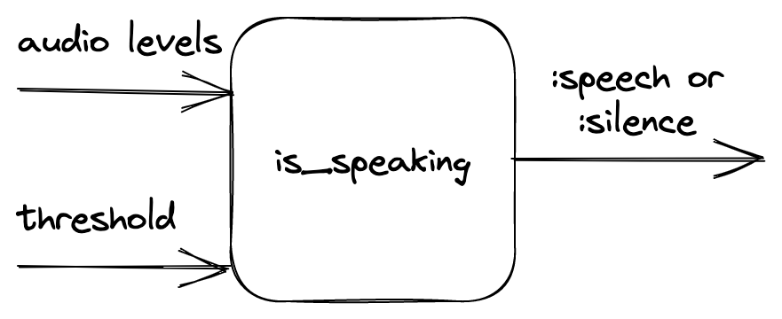
The main idea
The main idea and many of the intricacies of the algorithm are provided in the original paper (that is Dominant Speaker Identification for Multipoint Videoconferencing by Ilana Volfin and Israel Cohen). The following implementation was inspired by it.
Basically, we take the input levels and group them into three layers of intervals: immediates, mediums and longs. Intervals contain a finite number of subunits (longs contain mediums, mediums contain immediates and immediates contain level). The intervals are then thresholded and labeled as active or inactive. Based on the number of active intervals, an activity score is computed for each kind of interval.
In a little more detail
The intervals
There are three types of intervals:
- immediates - smallest possible interval
- mediums - a sample that is about as long as a word
- longs - a sample that is about as long as a sentence
There are also internal parameters of the algorithm like:
@n1, @n2, @n3- how many of the smaller intervals are in one bigger interval@n1- levels in one immediate@n2- immediates in one medium@n3- mediums in one long
@mediums_subunit_threshold- how many active immediates the medium interval should consist of to be counted as active@long_subunit_threshold- as above, but given the mediums and a long interval
To compute them we take the input levels.
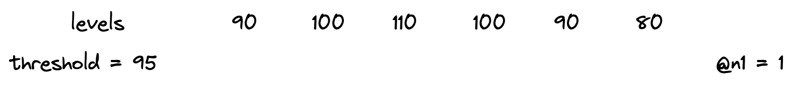
Then we combine them into immediates. Immediates are counted as active or inactive based on the threshold provided.
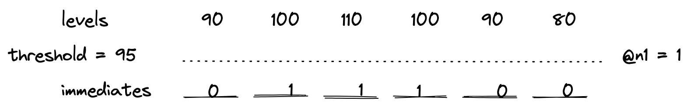
The numbers indicate the number of levels that are above the threshold. Since @n1 is equal to one, immediates only have values 0 or 1.
After that, the mediums are computed in a similar fashion.
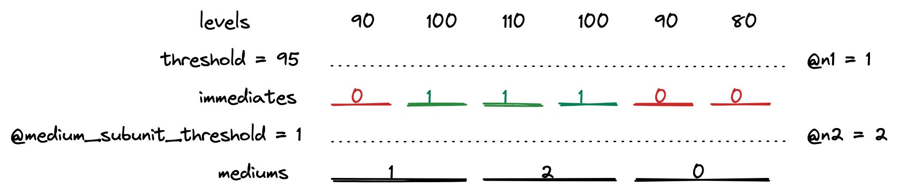
The red color indicates an inactive unit, whereas green symbolizes an active one. The numbers on mediums indicate counted active subunits of the lower tier.
Then the longs are counted.
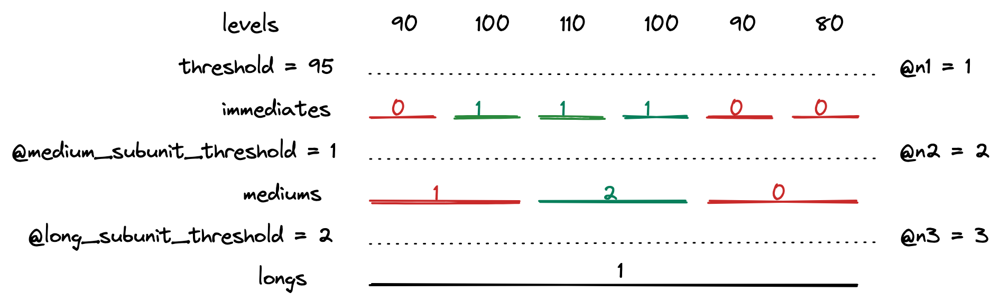
And the interval computations are done!
Additional note
Typically, there is only one long interval. This means that the maximum number of levels needed can be simply counted by multiplying @n1, @n2 and @n3 and therefore:
- The algorithm takes a constant number of audio levels.
- If the number of audio levels is smaller, it returns
:silence.
Activity score
After computing the intervals, we take the most recent one from all 3 lengths and compute the activity score for each one.
The computed values are also thresholded with other internal parameters called @immediate_score_threshold, @medium_score_threshold and @long_score_threshold.
If all the activity scores are above their threshold, the function returns :speech, otherwise :false.
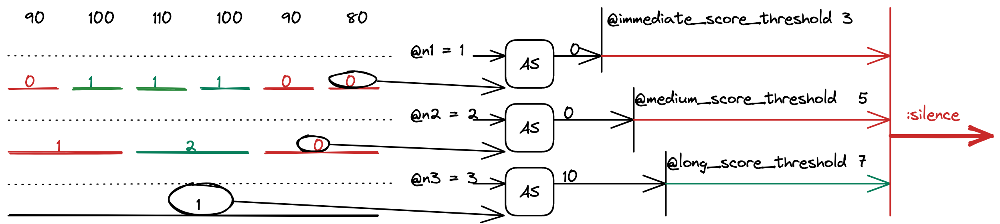
The activity score formula is taken directly from the paper. It is a loglikelihood of two probabilities: the probability of speech and the probability of silence. It is based on the number of active subunits in a unit. The details are provided in the aforementioned paper.
Implementation details
The algorithm described above was implemented as part of Jellyfish. The implementation also handles:
- updating the queue in which the audio levels are stored
- rolling over if a late packet has been delivered
- sending information if the VAD status has changed
Those steps are essential for the VAD to work properly in video conference context, so please, remember that in your own implementation.
Other useful information:
- WebRTC usually uses UDP under the hood, so packets will arrive out of order. You probably don't want to get a jitter buffer involved, so make sure that your time window implementation can handle out-of-order and possibly even late packets.
- Remember that you're dealing with
-dBov. The absolute value for silence is127, and the loudest possible sound has a value of0.
Tests, tests, tests!
Manual tests
The process of choosing internal parameters of the algorithm was not a trivial task. To have a better understanding of the inner workings of the algorithm, the VAD implementation was added to a video conference application and checked in terms of the return value and the activity scores it had produced.
The experiment consisted of telling the lines from Hamlet in Polish:
Niech ryczy z bólu ranny łoś, (0.5 - 2.5 s)
zwierz zdrów przebiega knieje (3.5 - 5.75 s)
True values are expected in the aforementioned time ranges.
Then the audio levels along with the threshold and the actual results were plotted with the results given below.
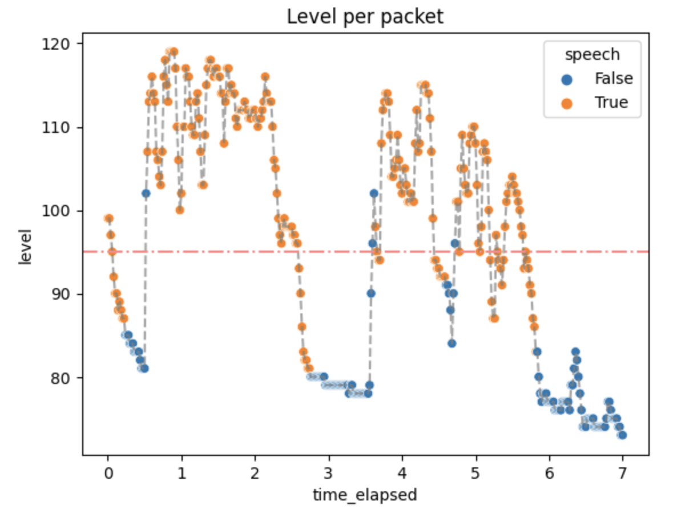
Not every packet with a level above the threshold has a True value. That is expected because we don't want the algorithm to always be active.
The activity scores were as follows:
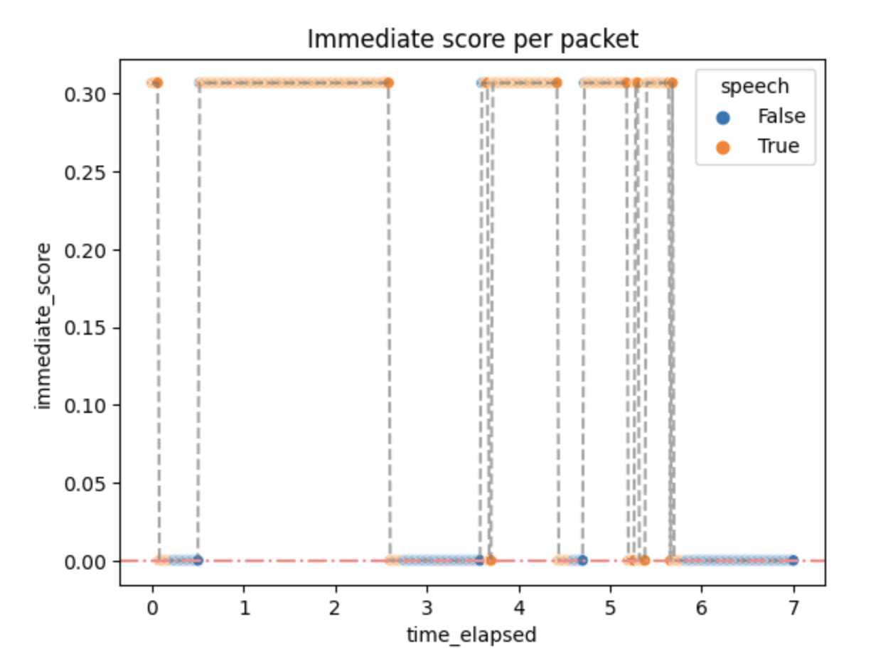
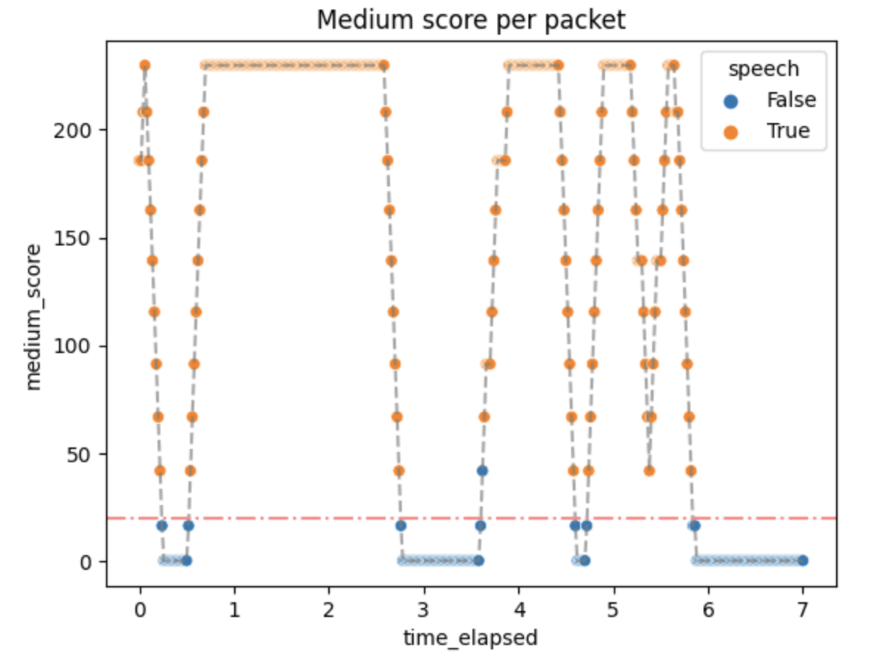
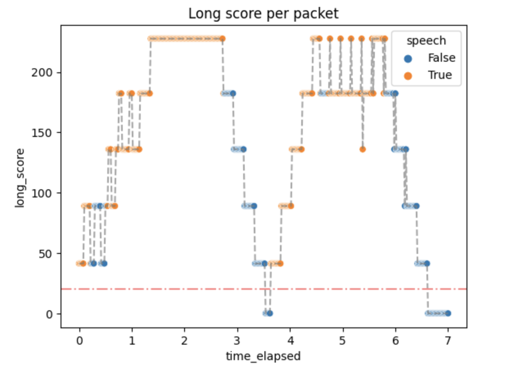
Small activity scores mean that the packets above the threshold quickly generate :speech as output, but don't stop immediately. It can be changed by changing the algorithm parameters if needed.
Performance
Some small performance tests were done in order to check if the algorithm implemented in Jellyfish is well-optimized and can serve in the real-time communication environment.
The time of the whole process was usually around 60 μs, which means no significant overhead. The number of reductions (function calls) was around 210. This matches our needs.
Conclusions
Where it pans out...
The algorithm is better than a simple count of a running average or thresholding without any additions. It generates plausible results quickly and without significant overhead. In short, the algorithm does what is expected.
...where it falls short...
As always, there can be room for improvement.
The number of parameters is big, especially for a simple algorithm like this. This makes it hard to parametrize well and may produce confusion for people that do not understand the algorithm that well.
The fixed threshold is not well suited for WebRTC and videoconferencing in general, mostly because of different user audio settings and unspecified Auto Gain Control (AGC) behavior.
...and what can be added
Dominant Speaker Detection
In the context of video conferencing platforms such as Jitsi, VAD is an important feature that allows for more efficient use of network resources by suppressing audio transmission during periods of silence. This can significantly reduce the bandwidth requirements and improve the overall quality of communication.
Once speech is detected, the audio stream is transmitted to other participants in the conference. When speech stops, the VAD algorithm detects the silence and stops transmitting the audio, thus reducing the network bandwidth usage.
A Dominant Speaker Detection like this could also be implemented in Videoroom. The estimation could be obtained from the activity scores computed during the described algorithm.
Additional UI features in Videoroom
Google Meet, Jitsi and many more WebRTC have an animation of what looks as continuous value returned by VAD. The indicator of speech moves along in correlation with how loud a person speaks.
For this to be completed in Videoroom, the activity score would need to be better adjusted.
RTSP
RTSP (Real Time Streaming Protocol) is an application-level protocol used to control the delivery of data with real-time properties. It was defined in RFC 2326. It's mainly used in media servers and surveillance web cameras.
Note that RFC 7826 defines RTSP 2.0, which makes the previous document obsolete, but this chapter will only refer to RTSP 1.0, as that's the version of the protocol we worked with.
It uses the same concepts as basic HTTP, though an important distinction between these two is that RTSP is not stateless.
RTSP by itself provides only the means to control the delivery of the stream. The actual stream contents are delivered using mechanisms based upon RTP (Real-time Transport Protocol). This means that RTCP (RTP Control Protocol) messages may also be exchanged between the server and the client using the media delivery channel (more on that in the following sections).
While working with RTSP, we encountered quite a few setbacks and roadblocks, which we're going to describe in detail in this chapter.
Setting up the connection
To receive a stream from an RTSP server, at least two separate connections need to be made:
- one for session negotiation and signalling, using RTSP (usually over TCP)
- others for stream delivery (one per each stream), using RTP (usually over UDP)
An example setup could look like this: 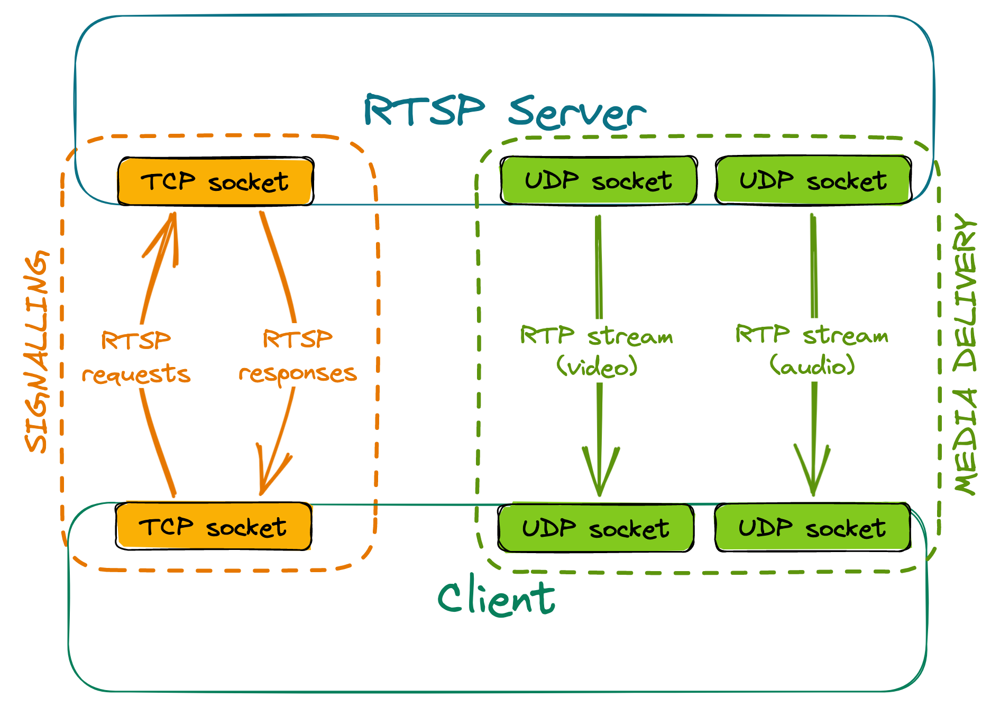
Signalling
The client sends various RTSP requests to the server, the most important ones being DESCRIBE, SETUP and PLAY. The server responds to these requests accordingly, depending on the current state of the session.
- For a DESCRIBE request, the response will include information about codecs used by the server, how many media streams it can offer, etc.
- SETUP requests must be targeted at a given stream. They communicate to the server that we wish to receive the stream, and the response contains information such as ports between which the stream will flow.
- PLAY requests must be targeted at a given stream that has already been set up. After receiving a valid PLAY request, the server will start sending media.
RTSP servers have a given timeout for sessions - if no requests are made within that timeout, the session is terminated. For that reason, clients need to send keep-alive messages to the server regularly, or else they'll stop receiving the stream once the timer is up. Most commonly, empty GET_PARAMETER requests are used as keep-alives; alternatively, some servers may extend the session automatically upon receiving an RTCP Receiver Report related to a given stream.
Stream delivery
The client sends a separate RTSP SETUP request for each stream that they want to receive. These requests must contain the port or port range, where the client expects to receive the stream.
Some RTSP servers may offer to set up two consecutive ports per stream - the first one for stream delivery and the second one for the exchange of RTCP messages.
Creating a NAT binding
Since RTP stream delivery is initiated by the server, if the client is behind NAT, a binding won't be created by itself, and the stream won't reach the client. However, a simple hack can be used to combat this issue. During the negotiation, we receive the port(s) from which the server will send the RTP stream. If we then send any datagram (even with an empty payload) from the client port(s) configured during negotiation, to the server port(s) received, it will be enough to create a NAT binding. This solution will allow the stream to reach the client, even when using the most restrictive, symmetric NAT.
Actually using the stream
What use is a stream if one cannot view it?
When we were working with RTSP, we attempted to:
- deliver the stream to a WebRTC peer, and
- convert the received stream to an HLS playlist.
Unfortunately, to decode the stream, we must first deal with several issues.
RTSP to WebRTC
Both RTSP and WebRTC use RTP for stream transportation. This may lead you to think it'd be enough to simply forward the received RTP packets to WebRTC peers, perhaps changing their SSRC in the process. How hard can it be?
Sadly, it's not as easy as it might seem.
Keyframes
If a new WebRTC peer joins an existing room, we will need to request keyframes (IDR frames) from all other participants. This poses a problem: RTSP itself does not provide a way to request that a keyframe be transmitted in the RTP stream.
The issues we write about in this section could maybe be alleviated by sending an RTCP FIR (Full Intra Request), RTCP PLI (Picture Loss Indication) or RTCP NACK (Negative Acknowledgement) for the lost packets. We won't write about this solution, as not all RTSP servers may support such requests. Refer to RFC 4585, RFC 5104 and RFC 6642 for more details.
Usually, keyframe frequency may only be configured server-side (globally for all clients) in encoder settings. The server will send a keyframe to each recipient every n frames, and that's about it.
The implications? Real-life example: We had an RTSP camera set up (default settings) so that it had a framerate of 25 fps and transmitted an IDR frame every 32nd frame, so every 1.28 seconds. This meant that, worst case scenario, you connected to a stream and had to wait over a second before being able to decode the stream, with no way to shorten this delay other than changing the server's encoder settings.
What's more: Once an IDR frame is lost, it's lost. You can't really do anything on the client side, which means no retransmissions (unless you use RTP over TCP or the server handles RTCP NACK/PLI).
Stream parameters
You may know that in order to decode a video stream encoded using H264, you need stream parameters, SPS (Sequence Parameter Set) and PPS (Picture Parameter Set). These may be transmitted in-band (together with the video stream, contained inside RTP packets) - if that's the case, no problems here. However, they may also be transmitted out-of-band, meaning they're absent in the video stream, and have to be delivered in some other way (and that's precisely what most RTSP servers will be doing).
Usually, RTSP servers will transmit stream parameters (together with other useful info) inside a response to the DESCRIBE request. They will be encoded using SDP (Session Description Protocol, RFC 8866, parameters: RFC 6871).
When it comes to WebRTC, the parameters must be present in the stream. This means that one needs to parse the parameters from the response, then somehow include them within the stream itself.
I'm sure injecting them won't cause any significant problems...
Injecting parameters into the stream
Should you wish to include the parameters in the RTP stream more than once (perhaps adding them before every keyframe, so that new peers are able to decode the stream if they joined later on), you immediately run into issues regarding packet numbering.
Suppose we have the following RTP packets being sent by the server:
0 1 2 3 4 5 6 7 8 9 10 - sequence number
I I I - I if keyframe
Let's say we have the SPS and PPS (delivered out-of-band) parsed and payloaded into an RTP packet "P" that we may inject into the stream at will.
Let's also assume that we will drop packets until we get the first keyframe, then inject the parameters before every keyframe in the stream.
If we inject some packets into the stream, we have to change the sequence numbers of all of the following packets. For now, let's say we're just going to assign them entirely new numbers, sequentially.
If we receive the packets in sequence, we'll be sending:
P 2 3 4 5 P 6 7 8 9 P 10 - original sequence numbers
0 1 2 3 4 5 6 7 8 9 10 11 - new sequence numbers
Suppose, however, that packet 6 arrived out of order, after packets 7 and 8:
0 1 2 3 4 5 7 8 6 9 10 - packets received by client
We're just checking if something is a keyframe, so this means we're sending
P 2 3 4 5 7 8 P 6 9 P 10
0 1 2 3 4 5 6 7 8 9 10 11 - new sequence numbers
The issue is obvious: the packet with the original sequence number 6 is now after the packet with the original sequence number 7. This means that we can't simply number the packets sequentially in the order we receive them.
OK, then suppose new = old + offset, where offset - amount of packets injected by us up to that point.
In sequence:
P 2 3 4 5 P 6 7 8 9 P 10
2 3 4 5 6 7 8 9 10 11 12 13 - new sequence numbers
Seems good, right? It's certainly better, as it will correctly number regular frames, which arrived out of order. Unfortunately, this won't be the case with keyframes arriving out of order. Consider, once again, the previous example:
P 2 3 4 5 7 8 P 6 9 P 10
2 3 4 5 6 8 9 ?? 7 10 11 12
We only have one spot left (number 7) for both parameters and I-frame 6. Not ideal.
Alright then, let's say new = old * 2, and if we need to inject a packet, just use the free number.
In sequence:
P 2 3 4 5 P 6 7 8 9 P 10
3 4 6 8 10 11 12 14 16 18 19 20
And, in the changed order:
P 2 3 4 5 7 8 P 6 9 P 10
3 4 6 8 10 14 16 11 12 18 19 20
Problem solved? Not quite. The issue is, this might cause some element downstream to think there's packet loss present, because of the gaps. This, in turn, may cause RTCP NACKs to be sent for nonexistent packets, and possibly other unpleasant things to follow.
Of course, there's the option of adding the parameters before EVERY frame - if you're alright with wasting a lot of bandwidth, that is.
Another possible solution would be to use an ordering buffer of an arbitrary size. This, however, introduces more delay...
And now the fun part: To make things simpler, we assumed an RTP packet to contain exactly one frame. This doesn't have to be the case! RTP packets can also have multiple different frames (with the same or different timestamps), or just a part of a single frame in their payload. Refer to RFC 3984 if you wish to learn more.
All of this contains some oversimplifications (Access Units =/= Network Abstraction Layer Units). Refer to the official H.264 specification if you wish to learn even more.
But what if we didn't have to add more packets?
Suppose we simply took each packet with an I-frame, extracted its payload, attached SPS and PPS before it, and payloaded it again, onto a single RTP packet with the same ordering number, just maybe a different packet type and a different size? No numbering/reordering issues then!
Unfortunately, that would be too good to be true. Increasing payload size means you run the risk of exceeding the network's MTU, in which case, the modified packets will get dropped along the way.
But surely we could add parameters to payload, then fragment if necessary so that each individual packet is below the MTU? Maybe that's the solution we've been looking for-- oh, wait, this runs headfirst into the very same numbering issues as before.
To summarise, in most cases, if one wishes to inject H264 parameters into the RTP stream itself, depayloading, parsing and repackaging the entire stream is the only viable option.
RTSP to HLS
Some of the terms used here are explained in detail in the section RTSP to WebRTC. Refer to it if you get lost.
RTSP to HLS conversion is relatively simple. The stream has to be extracted from RTP packets anyway, so there's no point trying to inject parameters into the stream, as the process of unpacking RTP removes sequence numbers, and we can then add SPS and PPS to each H264 keyframe.
Keep in mind, however, that (usually) keyframes will still be sent at a fixed rate. Also, it might be in your best interest to ensure the HLS segment duration overlaps with keyframe frequency.
The Great Chapter of Bugs
During the development of Jellyfish, we encountered a wide variety of bugs that took us days, weeks or even months to fix. This chapter contains the most interesting cases, explains what the roots of the problems were and how we solved them. We hope that in this chapter you will find information that we couldn't find anywhere.
Packet loss in a local network
The problem
At some point during the implementation of simulcast, we started noticing very strange statistics in the webrtc-internals. On some of our machines, web browsers that were connected via our WebRTC SFU were dropping a lot of RTP packets and video frames. The QoE was terrible. The client was displaying something around 3 FPS. It didn't matter whether we were testing in a local or remote network. At the beginning, we thought that this was some kind of packet loss, but we couldn't understand how it was possible in the local network. We completely turned off simulcast, decreased resolution, changed codecs and downgraded web browsers. Nothing helped. The only thing that we could notice was that the problem was not occurring on pretty strong machines, such as those with the 12th gen i9 processors or when we disabled TWCC.
Here are some plots from webrtc-internals dump that show the issue:


The explanation
After implementing TWCC, a client can finally estimate its real bandwidth (without TWCC enabled, a browser assumes 300kbps), which in turn allows it to send video in a higher resolution or with a lower compression level. The higher bitrate results in some video frames (e.g. keyframes) being split across multiple RTP packets. This turned out to be challenging for our UDP socket, which in Erlang is by default configured with a very small receive buffer. When the client sent a burst of RTP packets, which represent one video frame, some of those packets were immediately dropped as they couldn't fit into the socket's receive buffer.
The solution
The solution was as simple as increasing the socket's receive buffer. In addition, we also increased the number of datagrams that can be read at once.
gen_udp:open(Port, [binary,
{ip, IP},
{active, false},
{recbuf, 1024 * 1024},
{read_packets, 100},
{reuseaddr, true}])
end